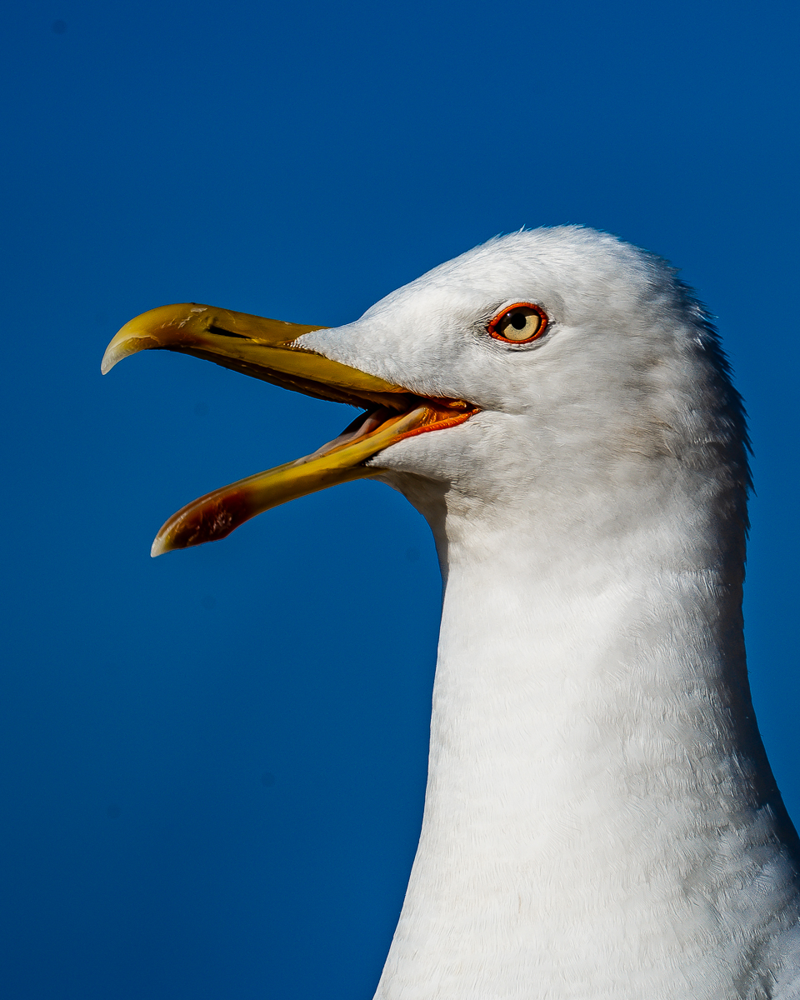
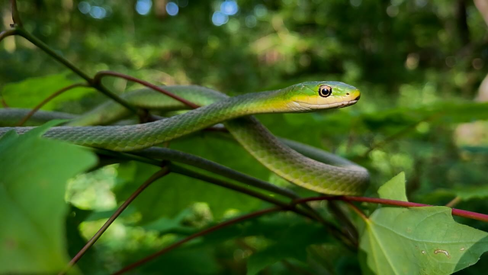
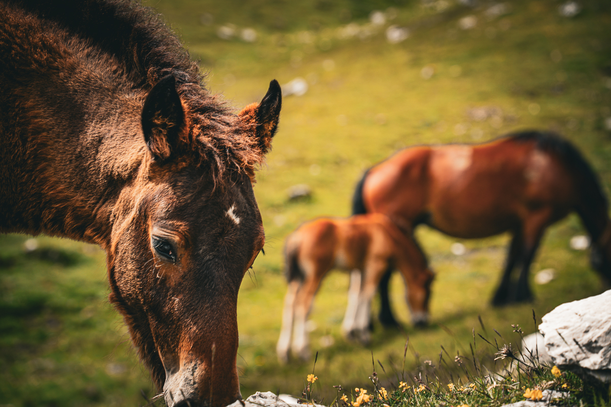
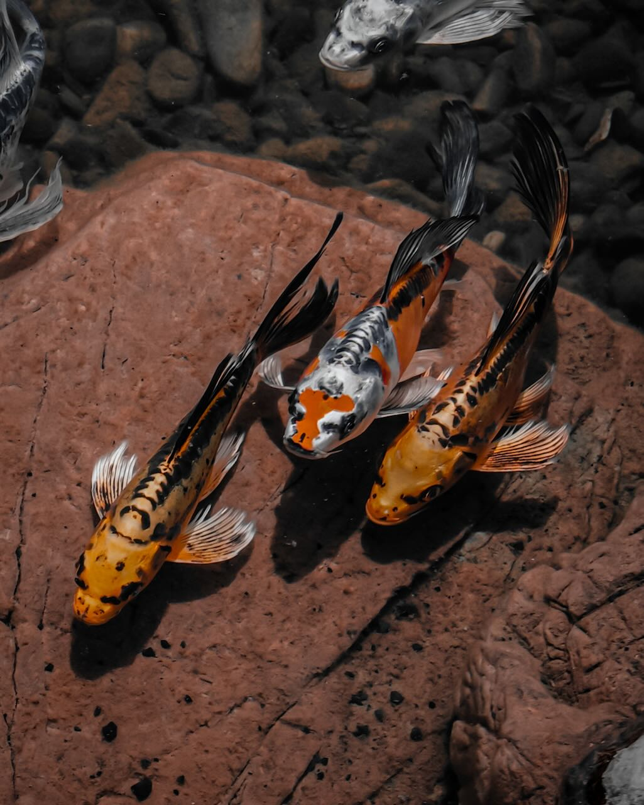
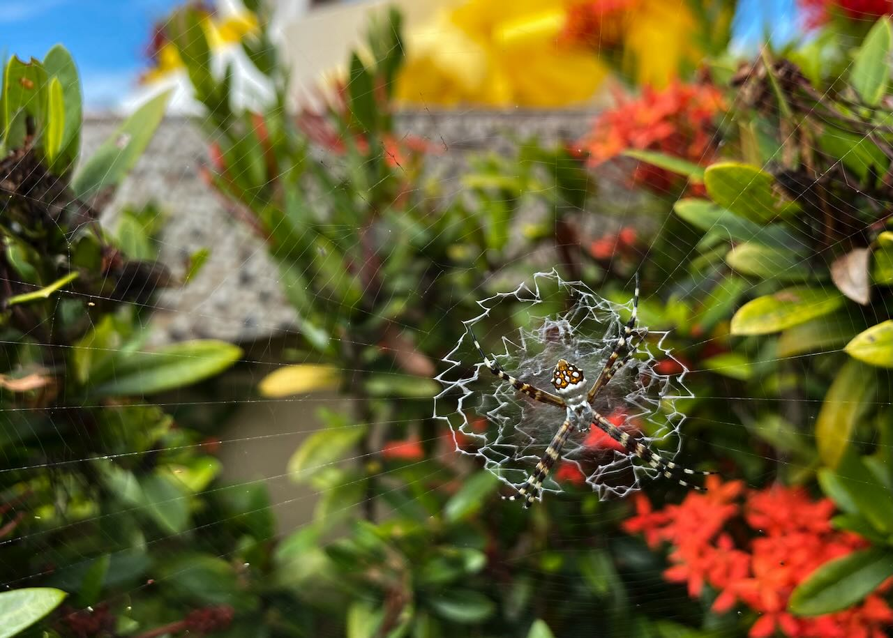
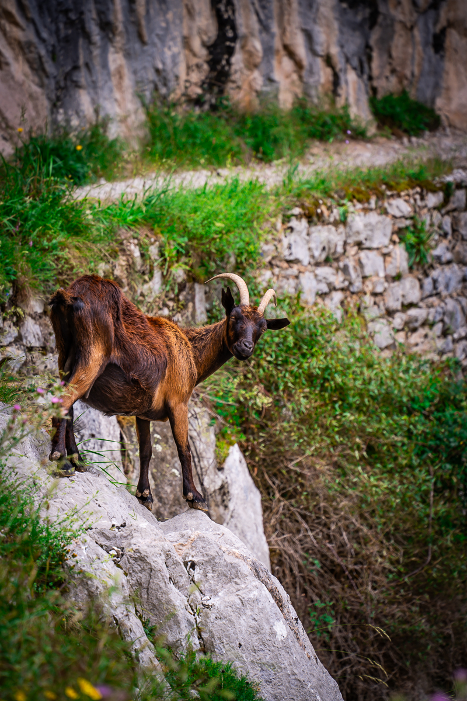
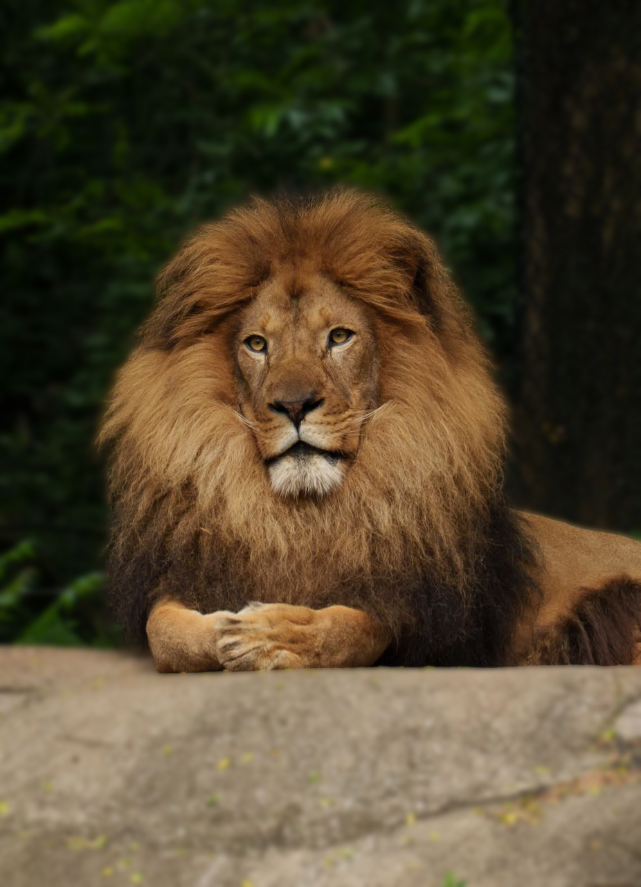
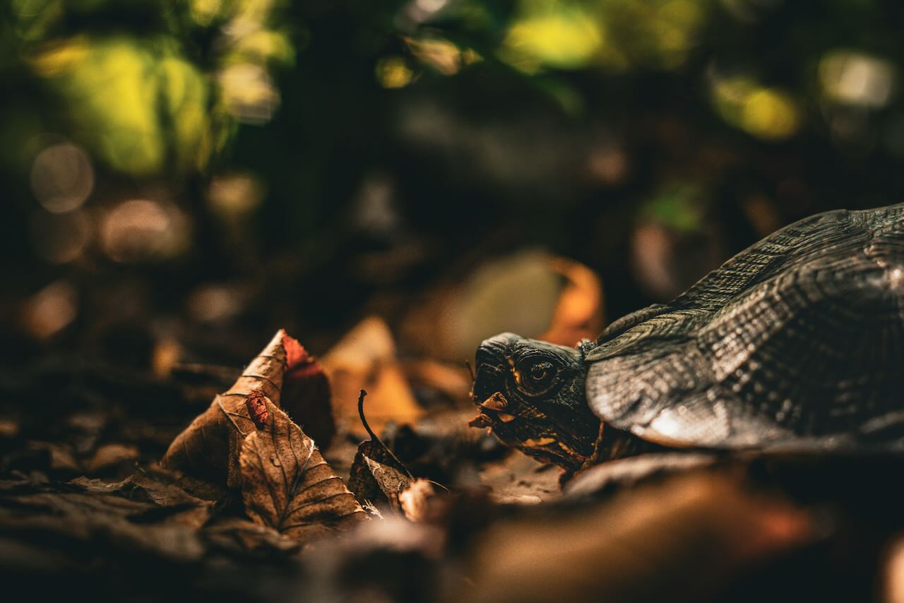

Wildlife
Wildlife photography requires patience, timing, and respect for the natural world. These images capture the beauty of the animal kingdom. From swimming koi to intimate portraits of our primate cousins, each photograph tells a story of life in the wild and reminds us of the importance of conservation.









| Setting | Typical Range | Purpose |
|---|---|---|
| Aperture | f/4 - f/5.6 | Wide aperture for subject isolation and fast shutter speeds |
| Shutter Speed | 1/500s - 1/2000s | Freeze motion of animals and compensate for long lens shake |
| ISO | 400 - 1600 | Higher ISO allows faster shutter speeds in varying light conditions |
| Focal Length | 200mm - 600mm | Telephoto lenses for reach and subject isolation from distance |
| Focus Mode | Continuous AF | Track moving subjects with continuous autofocus and tracking |